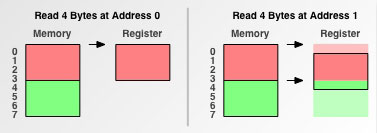

许多计算机系统对基本数据类型的合法地址做出了一些限制， 要求某种类型对象的地址必须是某个值\(K\)(通常是2、4或8)的倍数 。这种对齐限制简化了处理器和内存系统之间的硬件设计。例如，假设一个处理器总是从内存中取8个字节，则地址必须为8的倍数。如果我们能保证将所有的double类型的数据对齐成8的倍数，那么就可以用一个内存操作来读或者写值了。否则，我们可能需要执行两次内存访问，因为对象可能被放在两个8字节内存块中。
例如：
#include <iostream>
using namespace std;
struct A{
char a;
int b;
short c;
};
struct B{
short c;
char a;
int b;
};
int main(){
cout<<sizeof(A)<<endl; //结果是12
cout<<sizeof(B)<<endl; //结果是8
return 0;
}
以上结构体变量数量和类型完全相同，但是因为对齐限制，却得到了不同的结果。具体为什么会这样，请参考下面的对齐原则。
对齐原则
- 任何\(K\)字节的基本对象的地址必须是K的倍数: \(\text{align}(x) = \text{sizeof}(x) = K\)
- 结构体内存对齐要求结构体内每一个成员变量都是内存对齐的；
- 结构体本身也要对齐。
除此之外，程序员可自己指定数据的对齐大小，通过使用pragma pack(x)预处理命令，指定对齐大小为\(\text{pack_align}=x\)。只能指定\(2^n\)作为对齐大小，对于指定对齐大小为6、9、10这样的编译器不会理会。
#pragma pack(x)
//...
#pragma pack()
使用pragma pack(x)预处理命令后，对齐大小为
\[\text{align}(x) = \min(\text{sizeof}(x) , \text{pack_align})\]
即sizeof(x)和指定对齐大小哪个小，对齐大小就为哪个。
通过以下例子可以更好地掌握内存对齐原则：
#include <stdio.h>
#include <assert.h>
#include <stddef.h>
#pragma pack(1)
//此处指定对齐大小为1
//对于a，实际对齐大小为min(sizeof(int),1)=min(4,1)=1
//对于b，实际对齐大小为min(sizeof(char),1)=min(1,1)=1
//编译器会确保TEST_A首地址即a的地首址是1字节对齐的，此时a对齐
//对于b，由于b要求首地址1字节对齐，这显然对于任何地址都合适，所以a,b都是对齐的
//对于TEST_A数组，第一个TEST_A是对齐的（假设其地址为0），则第二个TEST_A的首地址为(0+5=5)，对于第二个TEST_A的两个变量a，b均对齐
//OK,对齐合理。因此整个结构体的大小为5
typedef struct TEST_A
{
int a;
char b;
} A;
#pragma pack()
#pragma pack(2)
//此处指定对齐大小为2
//对于a，实际对齐大小为min(sizeof(int),2)=min(4,2)=2
//对于b，实际对齐大小为min(sizeof(char),2)=min(1,2)=1
//编译器会确保TEST_A首地址即a的地首址是2字节对齐的，此时a对齐
//对于b，由于b要求首地址1字节对齐，这显然对于任何地址都合适，所以a,b都是对齐的
//对于TEST_B数组，第一个TEST_B是对齐的（假设其地址为0），则第二个TEST_B的首地址为(0+5=5)，对于第二个TEST_B的变量a，显然地址5是不对齐于2字节的
//因此，需要在TEST_B的变量b后面填充1字节，此时连续相连的TEST_B数组才会对齐
//OK,对齐合理。因此整个结构体的大小为5+1=6
typedef struct TEST_B
{
int a;
char b;
} B;
#pragma pack()
#pragma pack(4)
//此处指定对齐大小为4
//对于a，实际对齐大小为min(sizeof(int),2)=min(4,4)=4
//对于b，实际对齐大小为min(sizeof(char),2)=min(1,4)=1
//编译器会确保TEST_A首地址即a的地首址是4字节对齐的，此时a对齐
//对于b，由于b要求首地址1字节对齐，这显然对于任何地址都合适，所以a,b都是对齐的
//对于TEST_C数组，第一个TEST_C是对齐的（假设其地址为0），则第二个TEST_C的首地址为(0+5=5)，对于第二个TEST_C的变量a，显然地址5是不对齐于4字节的
//因此，需要在TEST_C的变量b后面填充3字节，此时连续相连的TEST_C数组才会对齐
//OK,对齐合理。因此整个结构体的大小为5+3=8
typedef struct TEST_C
{
int a;
char b;
} C;
#pragma pack()
#pragma pack(8)
//此处指定对齐大小为8
//对于a，实际对齐大小为min(sizeof(int),8)=min(4,8)=4
//对于b，实际对齐大小为min(sizeof(char),8)=min(1,8)=1
//编译器会确保TEST_A首地址即a的地首址是4字节对齐的，此时a对齐
//对于b，由于b要求首地址1字节对齐，这显然对于任何地址都合适，所以a,b都是对齐的
//对于TEST_D数组，第一个TEST_D是对齐的（假设其地址为0），则第二个TEST_D的首地址为(0+5=5)，对于第二个TEST_D的变量a，显然地址5是不对齐于4字节的
//因此，需要在TEST_D的变量b后面填充3字节，此时连续相连的TEST_D数组才会对齐
//OK,对齐合理。因此整个结构体的大小为5+3=8
typedef struct TEST_D
{
int a;
char b;
} D;
#pragma pack()
#pragma pack(8)
//此处指定对齐大小为8
//对于a，实际对齐大小为min(sizeof(int),8)=min(4,8)=4
//对于b，实际对齐大小为min(sizeof(char),8)=min(1,8)=1
//对于c，这是一个数组，数组的对齐大小与其单元一致，因而align(c)=align(double)=min(sizeof(double),8)=min(8,8)=8
//对于d，实际对齐大小为min(sizeof(char),8)=min(1,8)=1
//编译器会确保TEST_A首地址即a的地首址是4字节对齐的，此时a对齐
//对于b，由于b要求首地址1字节对齐，这显然对于任何地址都合适，所以a,b都是对齐的
//对于c，由于c要求首地址8字节对齐，因此前面的a+b=5，还要在c后面补上3个字节才能对齐
//对于d，显而易见，任何地址均对齐，此时结构体大小为4+1+3+10*8+1=89
//对于TEST_E数组，第一个TEST_E是对齐的（假设其地址为0），则第二个TEST_E的首地址为(0+89=89)，对于第二个TEST_E的变量a，显然地址89是不对齐于4字节的
//因此，需要在TEST_E的变量d后面填充7字节，此时连续相连的TEST_E数组才会对齐
//(注意：此处不仅要确保下一个TEST_E的a,b变量对齐，还要确保c也对齐，所以这里不是填充3字节，而是填充7字节）
//OK,对齐合理。因此整个结构体的大小为(4)+(1+3)+(10*8)+(1+7)=96
typedef struct TEST_E
{
int a;
char b;
double c[10];
char d;
} E;
#pragma pack()
int main()
{
A A1;
B B1;
C C1;
D D1;
E E1, E2;
printf("A:%zu, %zu\n", sizeof(A1), sizeof(A1));
printf("B:%zu\n", sizeof(B1));
printf("C:%zu\n", sizeof(C1));
printf("D:%zu\n", sizeof(D1));
printf("E:%zu, %zu\n", sizeof(E1), sizeof(E2));
return 0;
}
A:5, 5
B:6
C:8
D:8
E:96, 96
内存对齐原因
可能你对内存印象是，内存是由一个个字节组成的：
但是很可惜，CPU却不是这么看待的：
内存读取是按块进行的，块的大小称为粒度（granularity)。实际上在存储器层次结构上的较低层向较高层传输数据的时候都是按块进行的。也就是说，数据从内存到寄存器，要经过诸多关卡(在core i7上，有L1、L2和L3高速缓存)，每个关卡都有不同的粒度。所以为了提高速度，不仅仅大的对象要保证对齐，连对象内部的数据，也需要对齐到2的幂。
以内存读取为例，我们仔细看看为什么内存不对齐会影响读取速度？
假设CPU要读取一个4字节大小的数据到寄存器中（假设内存读取粒度是4），分两种情况讨论：
- 1.数据从0字节开始
- 2.数据从1字节开始
当数据从0字节开始的时候，直接将0-3四个字节完全读取到寄存器，就算完成了。

当数据从1字节开始的时候，问题很复杂，首先先将前4个字节读到寄存器，并再次读取4-7字节的数据进寄存器，接着把0字节，5、6、7字节的数据剔除，最后合并1、2、3、4字节的数据进寄存器，对一个内存未对齐的寄存器进行了这么多额外操作，大大降低了性能。

参考
- 1. 深入理解计算机体系（第三版）
- 2. 数据结构对齐 维基百科
- 3. https://www.cnblogs.com/xylc/p/3780907.html
- 4. https://www.cnblogs.com/jijiji/p/4854581.html